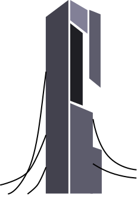
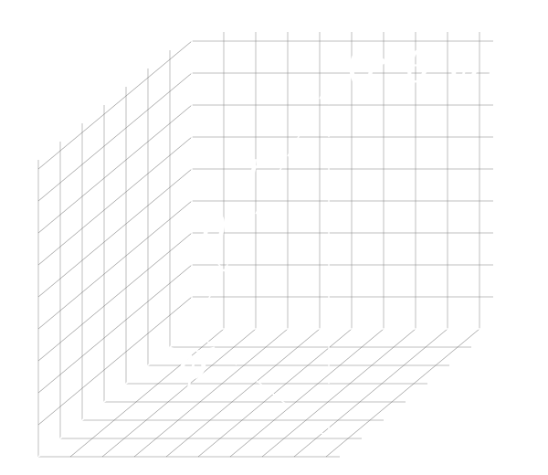

Statement of Originality
This website is submitted as part of the requirement for my degree of Computer Science at the University of Sussex. It is the product of my own labour except where indicated in the text. Please see the sources page for a full list of sources used in the creation of this website.
Generative AI Usage Record
Generative AI has not been used in the development of this website other than occasionally accepting Visual Studio Code's Copilot "ghost text" suggestions. However, these suggestions were only accepted if they were completing what I was already intending to write and were not used to generate large portions of code.
About
For my website I have created an archive showcasing my favourite megastructures from fiction. I have created three models of these megastructures using the 3D modelling software Blender. This tab will explore the general design and implementation decisions shared by all three models. You can explore the modelling process and interactivity development for each model using the tabs above.
Design

This website uses Bootstrap for the layout and styling. It makes heavy use of Bootstrap's list of pre-made components, supplemented with custom CSS for elements not possible to achieve with Bootstrap alone. The navigation bar at the top of the page is taken directly from the Bootstrap documentation, and supports a dropdown and a hamburger menu for mobile devices. The tabs on the about pages are also Bootstrap components in addition to their grid system which is used to create the responsive layout of all pages.
The website uses Bootstrap's inbuilt colour scheme for its good contrast and readability.
Bootstrap's dark theme was chosen as it fits the theme of the website and was enabled by adding the
attribute
data-bs-theme="dark" to the root HTML element.
I designed the Favicon for the website which is a scalable vector graphic of the Citadel using Figma. This involved using a reference image of the Citadel to guide the placement and shape of various polygons and bezier curves to create a simplified but recognisable depiction of the Citadel.
These about pages use the Shiki code renderer for the code snippets located throughout them.
Home Page
The website's home page uses three Bootstrap cards to display a preview of each megastructure model along with a brief description. These are contained in a fluid grid layout, allowing them to wrap when the screen is too small. The images for these cards are renders of each model using Blender's cycles rendering engine. These renders often include additional elements not found in the 3D view such as volumetric fog and procedural environments. For more information on the renders for each megastructure, please see their respective tabs above.
The home page features a full-width hero image with a custom parallax script taken from one of my previous projects. The parallax effect is controlled using both the scroll position and the mouse position to create a more dynamic and interactive experience.
All images on the website have been converted to the WebP format for better compression and faster loading times. WebP files are an average of 26% smaller than the same image encoded as a PNG file[1] improving performance for devices with slow connections. Additionally, the images on the home page are thumbnails of the original renders to further improve loading times. All images use CSS to resize when the screen size changes.
Shared Functionality
To enable the use of modern three.js features, this website uses
JavaScript modules
and import maps as detailed on the
three.js installation guide. Additionally,
my development environment includes a basic package.json which can be used with the
node package manager to provide type hints for the IDE.
All three megastructure pages display their models using three.js. Due to their similarities in design and functionality, a shared JavaScript module is used to reduce the amount of duplicate code. This module contains a function that handles all the basic setup and functionality for each page. Each page can configure the setup using an options object passed to the initialisation function. The JSDoc type definition of this object can be seen below:
Initialisation
The shared module provides most of the setup functionality used by all three megastructures. This includes creating lights, loading skyboxes, setting up anti-aliasing and post processing effects.
Model Compression
Many of the megastructures on this website include complex geometry and large textures. As a result, some care has been taken to compress the models to improve load times. All textures are encoded as WebP inside the GLTF files which dramatically reduces the size of some models. However the most consequential compression method used is GLTF's meshopt compression extension. This had to be enabled using the three.js MeshoptDecoder addon, and each model was preprocessed using the gltfpack command line tool. This was able to reduce the size of some models by up to 90% with no visible loss in quality.
Shadows
I have used three.js's shadow map system to create dynamic shadows in each scene. This effectively attaches an orthographic camera to the sun which is used to calculate which objects are obscured from the sun's perspective and which are not. This camera can be visualised by enabling the "Show Shadow Camera" option in the control panel. This is useful for debugging as shadows are not cast outside of the camera's view.
To use shadows three.js requires them to be explicitly enabled on each mesh in the scene. When a model has finished loading, I use the traverse function to enable every mesh as both a shadow caster and receiver.
Interactivity
Every model has a selection of shared interactivity features. As a result, these features are implemented in the shared JavaScript module. These include basic features that we were taught in lab such as toggling wireframe mode or orbit controls as well as more complex features such as enabling a glitch shader.
Many interactivity features are contained within a control panel that can be hidden using the arrow button. This was achieved using Bootstrap's collapse component.
Glitch Shader
The glitch shader is a post processing effect provided by three.js's addons that can be toggled on and off from the control panel. This also triggers looping glitch sound effect by Jurij from Pixabay.
Ambience
The ambience system dynamically increases and decreases the volume of a looping sound effect based on the camera's current height. This is distinct from three.js's positional audio system where volume is based on the camera's distance from a single point, instead of its height. This gives the impression that the sound is coming from the ground, which is appropriate for the sounds used on this website. The equation used to calculate the volume is as follows:
The improve the performance of loading sound effects onto the web application, I encoded every sound as a Ogg Vorbis file which I found had a better compression ratio than mp3. Another difficult I faced was due to browser autoplay policies, ambience sounds can only be played after the user has interacted with the page. To handle this situation, I detect if the the audio listener failed to start and display a button over canvas prompting the user to click to enable sound. This usually only occurs if the user refreshed the page or entered the URL manually, as clicking a link to the page from another page counts as an interaction that enables sound.
Time of Day

![[2]](https://en.wikipedia.org/wiki/File:3D_Spherical.svg){kind=link}
The most complex interactivity feature is the time of day slider. This slider allows the user to change both the position of the sun and the skybox texture. In three.js, the direction of the sun is determined by the direction of its position relative to the origin. As a result, some trigonometry is required to translate the slider which represents the sun's angle into a position. This is known as the spherical coordinate system which is depicted in figure 2. The equations below are used to calculate the sun's spherical coordinates from its initial Cartesian coordinates, which is the coordinate system used by three.js.
Having converted the sun's position into the spherical coordinate system, the time of day can be changed by simply changing its polar angle (θ). The inverse of the above equations can then be used to calculate the sun's new position in Cartesian coordinates.
These equations handle the movement of the sun and the shadows in the scene, but to create a convincing time of day effect, the intensity and colour of the sun and sky also need to change. For the former, the intensity of the sun is reduced as it gets closer to the horizon. This is achieved using the sine function which gives a smooth curve between the sun's angle and its intensity. The full equation is as follows:
To create the effect of a sunset, it is not sufficient to simply blend between two different skybox
textures. Instead, I wrote a custom
GLSL Shader
to dynamically mix the blue parts of the skybox texture with a warm sunset gradient as the sun gets
closer to the horizon. Unfortunately, three.js does not allow shaders to be applied directly to the
skybox. The way I solved this was to create a new scene containing only an orthographic camera and a
plane. The skybox was then rendered onto the plane (which supports shaders) and the camera's view
was rendered to a WebGLRenderTarget. Once again, three.js causes difficulties here as
it caches the skybox texture after its been loaded. To remedy this, I am using a
PMREMGenerator to create a new skybox texture from the render target every time the
skybox is updated. All of this creates a very nice effect that would not be achievable by simply
blending skyboxes. The full fragment shader source code is shown below: